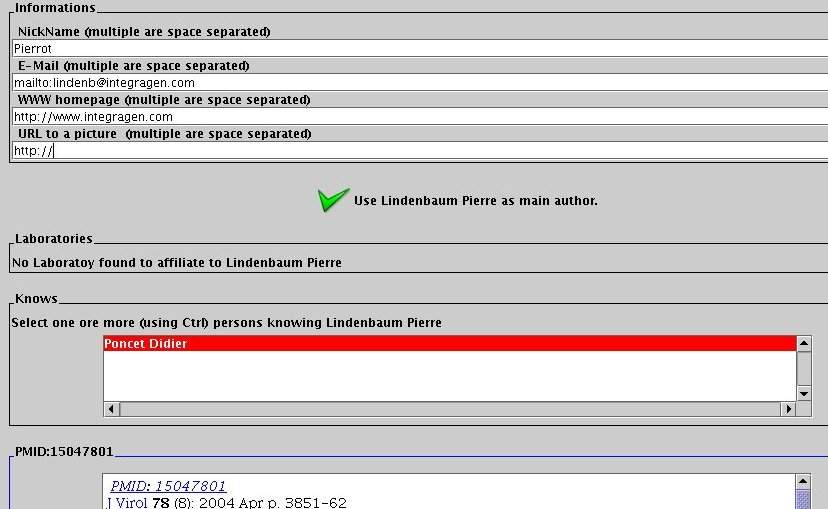
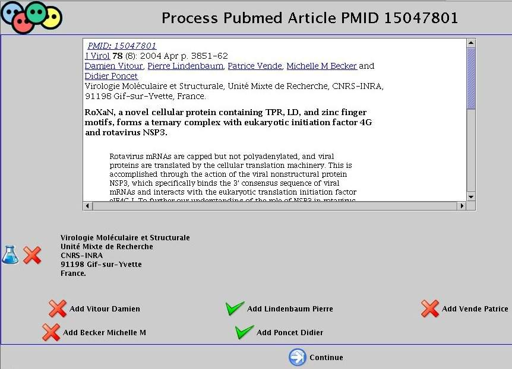

SciFOAF
© Pierre Lindenbaum 2005
What is FOAF and how can I use it ?
The FOAF project defines a semantic format based on RDF/XML to define persons or groups, their relationships, as well as their basic properties such as name, e-mail address, subjects of interest, publication, and so on...
What is SciFOAF ?
SciFOAF is an interface used to generate a FOAF file using NCBI Pubmed.
The PubMed bibliographic database is a powerful source to discover
collaboration networks as each paper submitted contains potential
information about each author.
An interface called SciFOAF (Scientific FOAF) was written to generate a FOAF
file from the literature found in PubMed. It is initialized with a PubMed identifier (PMID)
that is used as a seed to start browsing a collaboration network and
the user is asked to select the authors of this paper that will appear in
the FOAF file. Authors are stored in a 'stack' and the user
interaction will be required until this stack is empty.
For each person in the stack complementary information
(such as e-mail, web site...) can be fulfilled and his latest publications
are fetched from NCBI using the NCBI E-Utilities tool.
Then, for each article the user is asked if the current person is
unambiguously one of the authors and whether he knows any of the co-authors
(which may not be necessarily the case when there is a large number of
collaborators) and each of these new co-author is added on top of the stack.
Laboratories addresses are extracted from the articles and the user can
select among this list to affiliate the current author to one or more
laboratory. The user can also link the current author with a person already
depicted if they know each other but did not take part in a common publication.
Author’s interests are defined using the MESH terms of their papers.
Once all information about the current author have been fulfilled
he is removed from the stack and at the end, the user can save its
FOAF file as a XML/RDF file.
This process could have been generated automatically by a recursive program
without human intervention if there was not ambiguity between authors names
and if the addresses of the laboratories were always written the same way
but this is unfortunately not the case: the same address of a laboratory
can be written differently from one paper to another and there is no unique
identifier that could be used to discriminate two homonymous authors within
the XML description of papers. Moreover, authors’ name definition may vary
from one journal to another as some journal may use the initial of an
author while another may use the complete first name.
Furthermore the NCBI E-Search utility just uses the family name and the
initial so homonymous authors may be fetched with the same query.
In consequence SciFOAF requests the user to confirm/infirm the
relationships between authors and their publications.
An example
An sample of the output is available here foaf.xml. It was created at the time where I did not handled 'accent'.
Note that it also contains names duplicated because sometimes, the same name may be written in two different way.
How to use SciFOAF ?
Start your network description by a NCBI Pubmed ID (PMID).
e.g. 15047801.

Select people you know and you want to include in your network

For each selected author, complete its personal information (mail, web page...) and select his affiliated laboratories

For each paper, check if the paper was written by the current author.
When you're done with this author click on the 'NEXT' button at the bottom of the scrollable page

When your done (there is no more author on the stack), click on the 'Save ' button to export the RDF/XML describing the network

How to cite SciFOAF ?
SciFOAF: Pierre Lindenbaum 2006.
References
- Bachrach,C.A. and Charen,T. (1978) Selection of MEDLINE contents, the development of its thesaurus, and the indexing process. Medical Informatics (London), 3,237-254.
- Bohne-Lang,A., Lang,E. (2005) Do we need a Unique Scientist ID for publications in biomedicine? Biomed Digit Libr., Mar 22;2(1):1.
- Newman,M.E. (2001) The structure of scientific collaboration networks. Proc. Natl. Acad. Sci. USA., 98,404-409.
- Ding,L., Zhou L., Finin T. and Joshi A. (2005) How the Semantic Web is Being Used: An Analysis of FOAF Documents. Proceedings of the 38th International Conference on System Sciences.
- Wheeler,D.L., Barrett,T., Benson,D.A., Bryant,S.H., Canese,K., Church,D.M., DiCuccio,M., Edgar,R., Federhen,S., Helmberg,W., Kenton,D.L., Khovayko,O., Lipman,D.J., Madden,T.L., Maglott,D.R., Ostell,J., Pontius,J.U., Pruitt,K.D., Schuler,G.D., Schriml,L.M., Sequeira,E., Sherry,S.T., Sirotkin,K., Starchenko,G., Suzek,T.O., Tatusov,R., Tatusova,A., Wagner,L., Yaschenko,E. (2005). Database resources of the National Center for Biotechnology Information. Nucleic Acids Res., 33, 39-45.
Links
Pierre Lindenbaum PhD
plindenbaum@yahoo.fr